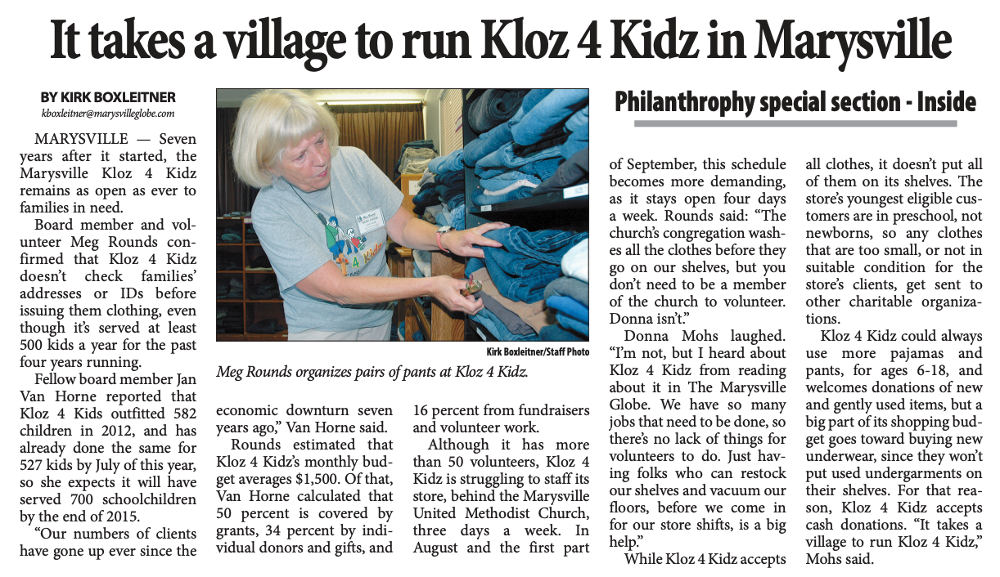

Serving schoolchildren in Snohomish County since 2008
Serving schoolchildren in Snohomish County since 2008

About Kloz 4 Kidz
We are proud to serve Snohomish County families in a friendly, positive, affirming atmosphere.
Serving schoolchildren in Snohomish County since 2008
We are proud to serve Snohomish County families in a friendly, positive, affirming atmosphere.
Founded by educators with a belief that all schoolchildren deserve to feel good about their wardrobe, we are dedicated to providing kids from any family, regardless of income, a traditional school clothes shopping experience.
Press coverage from the Everett Herald. Click here to read the article
 View article
Kloz 4 Kidz is
a ministry of Marysville United Methodist Church
and the United Methodist Women.
©Copyright 2021-22 by Janet Raynor.
All rights reserved.
If you are in need of free clothing for your school-aged Snohomish County child or children, we are here to help. We are opened for clothing pick-ups through May, and are planning to re-open for indoor appointments after our summer shutdown, on August 6th, 2022.
Directions for our current appointment process are below. Before you begin, please have your child's clothing sizes available.
*Please note that the jeans must be tried on, and their availability is therefore dependent upon our access to our inside space with its fitting rooms. If we have to close again for indoor appointments, we will also not be providing jeans.
**Because they make up our single largest budget item, we typically limit each child to two pairs of shoes per year. If your child has outgrown their previous shoes and they are not yet eligible for another pair, please let your volunteer know, as we may be able to make an exception.